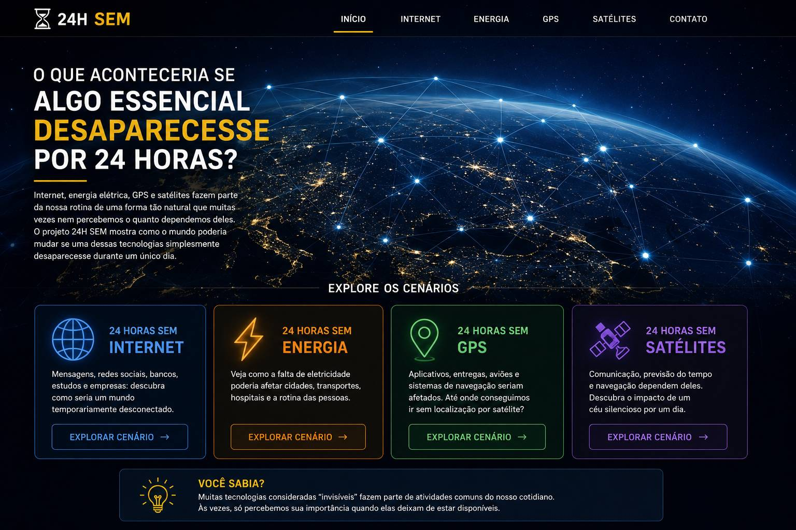

🚗 Transporte
Motoristas e serviços de entrega poderiam perder a navegação por GPS e depender mais de mapas armazenados ou referências alternativas.

Aplicativos, entregas, aviões e sistemas de navegação seriam afetados. Até onde conseguimos ir sem localização por satélite?
O GPS é conhecido principalmente pela navegação, mas sinais de posicionamento e tempo também são utilizados por diferentes sistemas. Por isso, uma interrupção poderia ser percebida em atividades que não parecem ter relação direta com mapas.
Motoristas e serviços de entrega poderiam perder a navegação por GPS e depender mais de mapas armazenados ou referências alternativas.
A aviação utiliza vários sistemas de navegação e procedimentos, portanto o impacto não seria simplesmente "todos os aviões pararem". Haveria maior dependência de alternativas disponíveis.
Embarcações poderiam utilizar outros métodos de posicionamento e navegação, mas algumas operações perderiam precisão e eficiência.
O sinal de tempo associado a sistemas de posicionamento pode ser importante para equipamentos e redes que precisam manter relógios sincronizados.
Sistemas que dependem de posicionamento por GPS começam a perder a referência de localização e tempo.
Navegação, entregas, aplicativos e operações que utilizam localização começam a apresentar dificuldades.
Os impactos se espalham por diferentes atividades e mostram a importância do posicionamento preciso.
Depois de 24 horas, diversos sistemas precisam recorrer a alternativas ou operar com limitações.